Инженерные изыскания и проектирование в Калининграде
АО институт «Запводпроект» это команда инженеров отрасли гражданского строительства, объединенная призванием разрабатывать технические решения во благо человека и общества. Компания реализует комплексный подход на рынке инженерных услуг: сбор исходных данных, выполнение инженерных изысканий, техническое обследование, разработка проектной и рабочей документации и авторский надзор.
34
года на рынке
62
сотрудника
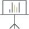
1053
проектров
Выполняем работы
под ключ
Располагаем квалифицированным
штатом
Взаимодействуем с государственной и негосударственной экспертизой
Осуществляем информационное моделирование
Выполняем стоимостной
расчёты
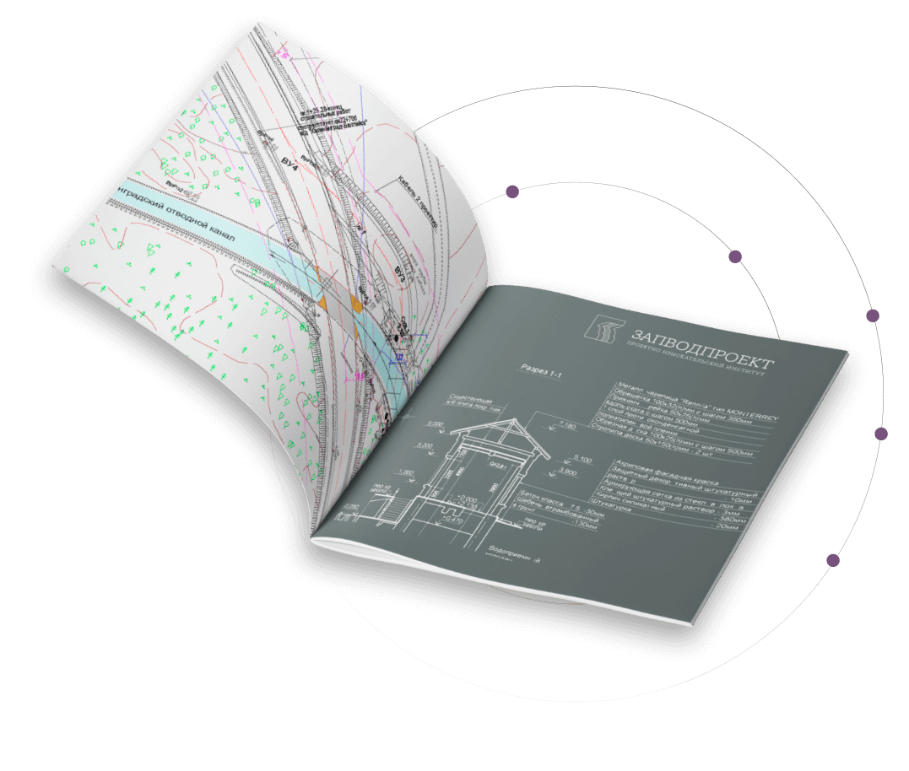
Заказать проектИнженерные изыскания
Работаем ГНСС приемниками и цифровыми тахеометрами, выполняем топографическую съемку, согласование с эксплуатирующими организациями и подготовку отчета.
Подробнее об услуге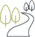
гидрометеорология
для СМР
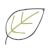
морфометрия
проекты нормативов
образования
отходов
Полищук Наталья Аполинарьевнаначальник отдела инженерной
гидрометеорологии
Выполняем бурение инженерно-геологических скважин, исследования свойств грунтов в собственной лаборатории, зондирование и камеральную обработку.
Подробнее об услугебурение
испытания
штампом
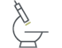
отбор и анализ
грунта
Алейникова Зара Дорофеевнаначальник отдела инженерной
геологии
Изучаем климатические и гидрологические условия, рассчитываем уровни, скорости размыва и готовим отчетную документацию.
Подробнее об услуге
геодезия
и топография

продольный и
поперечный
профиль водоемов

кадастровые
работы
Лагутов Дмитрий Геннадьевичначальник ПТГИ
Собираем исходные данные о состоянии окружающей среды, выполняем измерения, анализы почвы, воды и донных отложений.
Подробнее об услугеООС
ОВОС
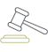
общественные
слушания
экологическая
экспертиза
Алейникова Зара Дорофеевнаначальник отдела инженерной
геологии
Инженерные изыскания
Инженерно-геодезические изыскания
Работаем ГНСС приемниками и цифровыми тахеометрами, выполняем топографическую съемку, согласование с эксплуатирующими организациями и подготовку отчета.
Подробнее об услугегидрометеорология
для СМР
морфометрия
проекты нормативов
образования
отходов
Инженерно-геологические изыскания
Выполняем бурение инженерно-геологических скважин, исследования свойств грунтов в собственной лаборатории, зондирование и камеральную обработку.
Подробнее об услугебурение
испытания
штампом
отбор и анализ
грунта
Инженерно-гидрометеорологические изыскания
Изучаем климатические и гидрологические условия, рассчитываем уровни, скорости размыва и готовим отчетную документацию.
Подробнее об услугегеодезия
и топография
продольный и
поперечный
профиль водоемов
кадастровые
работы
Инженерно-экологические изыскания
Собираем исходные данные о состоянии окружающей среды, выполняем измерения, анализы почвы, воды и донных отложений.
Подробнее об услугеООС
ОВОС
общественные
слушания
экологическая
экспертиза
Лабораторные исследования
Выполняем физико-химические анализы сточных, природных, питьевых вод, донных отложений, почв, грунтов, отходов. Осуществляет инвентаризацию и текущий контроль источников выбросов вредных веществ в атмосферу. Выполняем анализы грунтов и воды для целей инженерно-геологических изысканий.
Вода
Наличие в воде химических
или бактериологических
загрязнителей
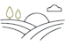
Почвы и грунт
Оценка пригодности грунта
для строительной
или с/х деятельности
Газы
Определение компонентного
состава природного газа
Донные отложения
Минеральные вещества, отложившиеся
на дне океанов, морей, озёр, рек в результате
физ., хим. и био. процессов.
Григорьева Ирина Викторовнаначальник лаборатории
Проектные работы
Гидротехнические сооружения
Дамбы, шлюзы, плотины, берегоукрепление, причалы, пляжи;
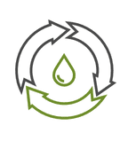
Объекты водоотведения
Очистные сооружения, КНС, коллекторы
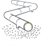
Мелиорация
Гидро (каналы, дренаж) и культуртехническая
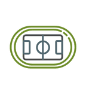
Объекты спорта
Многофункциональные комплексы, спортивные залы.
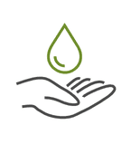
Водные объекты
Расчистка, определение водоохранных зон;
Рекультивация нарушенных земель
Полигоны ТКО.
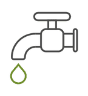
Объекты водоснабжения
Водозаборы, насосные станции, РЧВ, водоводы
Сметная документация
Сметы на ПИР и СМР.
Реализованные проекты


лицензии
документы
документы
Отвечаем стандартам качества и имеем все необходимые лицензии и сертификаты.


Наши партнеры
Контакты